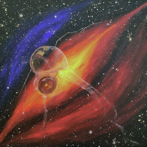

I am motivated through success within my career and relationships.
Taurus Moon
In terms of relationships, I can't communicate well when stressed. In terms of school or work, I'm actually more relaxed.
Virgo Rising
I'm usually bubbly and friendly, but I think I can come off to be more reserved if it's a new person I'm meeting.
Sagittarius Mercury
I prefer to communicate in person, but when I'm upset I need to organize my thoughts and organzing it through text is easier sometimes.
Aquarius Venus
My love language is definitely acts of service. I love being heard and listened to, and always find it endearing when someone remembers the small things.
Aquarius Mars

When it comes to approaching goals, I'm quite relentless and will always find an approach to get what I want done.
Leo Jupiter
Self improvement and growth are not always linear, but as long as I'm taking steps forward and not stuck in my ways, I see progress.
Gemini Saturn
Sometimes I overcommit and take on so much responsibilities, but I do my best to show up and do the best I can. I always try to keep my word.
Aquarius Uranus
Change definitely makes me uncomfortable. I like what I like and trust it won't change. As I get older, I am more open to change and innovation.
Aquarius Neptune
I approach dreams and aspirations the same way I take on goals and responsibilites. I need to see my dreams become reality.
Sagittarius Pluto
There's discomfort with change, but as I grow and mature, I try to find beauty in transformation and the journey along the way.